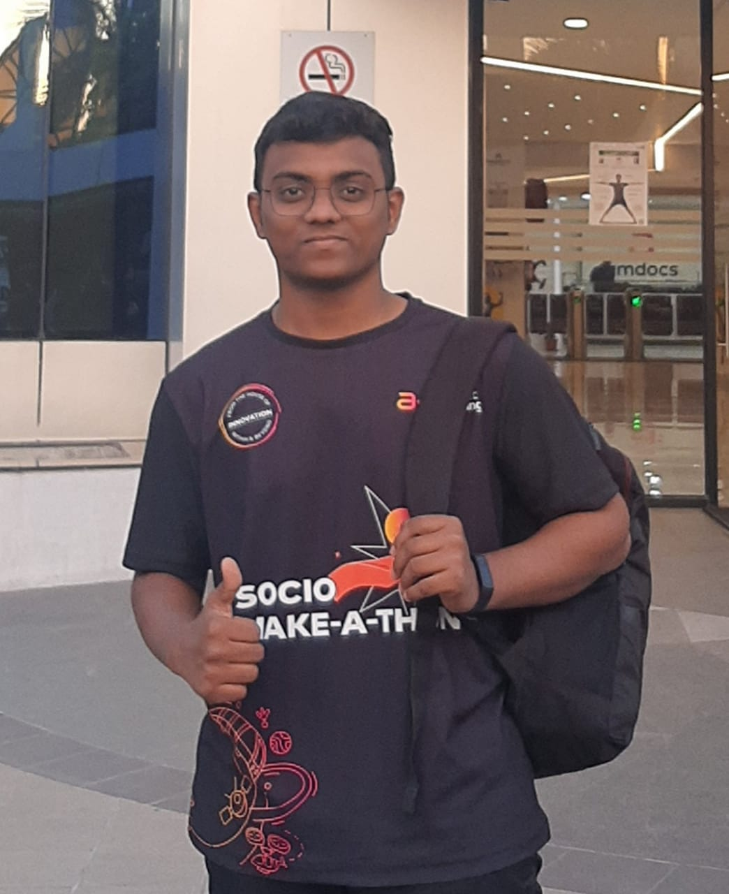

On this site you will get to know about me professionally and personally too by Blogs.
Recently want to Amdocs, Pune facility for SOCIO-MAKE-A-THON.
leaves in Thane, Maharashtra, and Currently Studying in Pune, Maharashtra. origin from Andhra Pradesh.I am a sophomore doing Computer Engineering at D Y Patil University, Ambi.Learning, Exploring and Implementing software development and programming for the past 2 years.Explored and had fun in domains like Web Development, Web Applications, Cloud Computing, DBMS, Computer Networking, Linux, Git/Github, and many more... I was a Top Contributor to Google Crowdsource Vocalize Campaign with 6000+ Contributions.
TThis Concept I got to know from Kunal Kushwaha Developer Advocate at Civo. That Sharing on socials about what you attending, learning, Exploring, and Implementing everything by socializing makes you active in front of them how you are looking for in the future and unconditionally you are contributing to the community. via Linkedlin, Twitter, Blog, Youtube.
Open source software can help to grow networks in several ways. First, open source software is often freely available for download, which means that more people can access and use the software. This can help to grow the network of users and developers working on the project, as more people are able to contribute their skills and resources. In addition, open source software is often developed and maintained by a community of volunteers, which can create a sense of collaboration and cooperation within the project. This can help to foster a sense of community and belonging among the project's contributors, which can in turn help to grow the network of people working on the project.